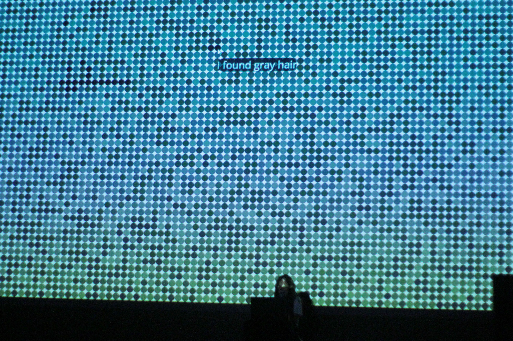

Performance of Gray hairs at ELO2023. Photograph by @gabigvalente.
Gray hairs is a browser-based literary work for mobile/desktop. The screen (or videoprojection) is filled with small black dots which slowly begin to fade to white. I click on the graying dots, which reveals a slowly unfolding narrative about gray hairs and about dyeing one's hair.
As the words appear on the screen, I read them out loud. I pace my reading depending on how I am feeling the text that day, and according to the mood of and response from the audience. As such, a live reading of Gray hairs takes about 15-20 minutes depending on the situation.
The live reading/performance finishes with the words "... at the end", at which point I place the microphone back on the stand and step away from my computar to signal the end of the performance.
A tall podium (or alternately, a small table and chair) with my laptop are placed towards the back of the stage, close to the projection surface. I am not illuminated by stage lights, rather, the videoprojection of the work obfuscates my form while simultaneously illuminating it somewhat (see image below).
Performance of Gray hairs at ELO2023. Photograph by Sal Nunkachov.
Gray hairs is performed with a fullscreen projection that runs from my personal laptop (Macbook Pro, with HDMI output). I speak into a handheld microphone as I click through the poem. There is no audio output from the computer.
Summary of technical requirements:
☐ small podium/stand/table for my laptop (standing height preferred)
☐ HDMI cable (to be connected to my laptop)
☐ videoprojector + large screen (to project the HDMI signal to)
☐ microphone (preferably a SHURE SM58)
☐ microphone stand (although I will hold the microphone in my hand)